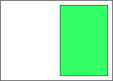
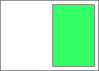
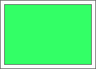
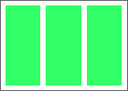
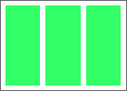

Abstract
The Pagination Templates module describes templates that can be defined in CSS to display content in a paginated view. These templates define a page containing one or more boxes with content assignments. As content overflows additional pages are generated using template selection rules until all of the content is displayed.
Status of this document
This document is only an Editor's Draft. It has not yet been adopted by the Working Group, and should not be considered to be part of CSS.
The following features are at risk: none
Table of contents
Introduction
This section is not normative.
This module describes how to define pagination templates in CSS. In CSS 2.1 content displayed on-screen is assumed to be a single continuous canvas. Pagination templates provide a mechanism for a 'paginated' experience that applies to on-screen presentation as well as printed media. Pagination templates describe the layout of pages in which content is displayed as the user moves from page to page on screen or prints the document content. When content is laid out using pagination templates, pages are generated as needed to accommodate all the content.
The draft as it stands requires pagination to present the repeated template layouts. Other methods of repeating template layouts to accommodate content might be specified, but the draft would need to be reviewed to remove all reliances on paged displays.
Pagination templates consist of anonymous boxes called slots created by CSS to contain content. Layouts that use pagination templates mainly determine the size of these slots from the template definition instead of the intrinsic size of their content. When content does not fit into a template slot, additional pages are created with more slots to contain the overflow content.
Multiple pagination templates can be defined for a given document. A paginated element can use a single template or select from a set of templates each time a new page needs to be generated. Which template is used for a given page can be defined by a selector or by choosing a template based on available content. Elements can further constrain the applicable template set by listing a subset of templates that apply.
The terms 'template' and 'page' are overloaded in CSS, but they are the words that most clearly describe the concept. Some alternates for the main @ rule: template, page-template, view-template, page-master, master-template, master. Other suggestions are welcome, but only if they are more helpful than onelook.com (which suggested "Captain Submarine").
Module Interactions
This module uses named flows and region chains defined in [[CSS3-REGIONS]].
This module uses the overflow-style property from [[CSS3-GCPM]].
Some examples use positioning from [[CSS3GRID]].
Pagination Templates and Slots
An @template rule defines a pagination template. Pagination templates contain one or more slots to display content. An element can use pagination templates if its 'overflow-style' property is set to any of the paged-* values defined in css3-gcpm. If a document defines no pagination templates, then there is an implicit paginated template with a single slot containing the paginated element's contents.
Do pagination templates get their size (and other characteristics) from the element with the overflow-style property, or does this have be set in the @template rule? Can templates use a default 100%/100% size based on the element's box?
A slot is an anonymous box in a paginated template where content can be placed. In an @template rule @slot rules create slots. The order of @slot rules determines the order of the boxes in the paginated template. Each @slot rule can take an optional name.
Slots default to displaying the content of the paginated element. Slots can instead contain generated content assigned from the content property. Slots can also be assigned content from named flows.
An @template rule that creates header and footer slots around the paginated element's content
@template {
@slot header { content: "header string"; }
@slot { }
@slot footer { content: "footer string"; }
}
If any slot in a particular page has overflow content, a new page is created with a new set of slots to receive the overflow content. Slots with the same named flow assignment form a region chain (within a pagination template and/or across pages created from pagination templates). When a new page is created a slot that has been assigned element content or content from a named flow may not have any content left to render. In this case the slot for the exhausted content source is not instantiated.
If there is more than one slot with no 'content' or 'flow-from' assignment, does the element's content use all of these slots like a region chain, or is only the last unassigned slot used for content?
The simplest example takes all of the content in the document and flows it into a single paginated template with a single slot. This template will display a viewport's worth of content at a time, and will create a new slot on a new page each time content overflows.
The three examples below are equivalent, but merely illustrate how content from the element can be assigned to paginated template slots. Actual use of templates would either define more slots or assign content differently than the default.
body { overflow-style: paged-x; }
body { overflow-style: paged-x; }
@template {
@slot { }
}
body { overflow-style: paged-x; }
body > * { flow-into: body-flow; }
@template {
@slot { flow-from: body-flow; }
}
@slot rules are a first pass at defining CSS-created boxes. Other means of creating and addressing pseudo-element slots have been discussed on www-style. Another possibility is using HTML like WebComponents does to define the boxes. However the boxes are created there needs to be a way of assigning content to boxes and accessing the template structure through scripting. If pseudo-elements are used, then OM for pseudo-elements must be defined. If HTML templates are used a declarative method of mapping content to elements must be defined.
Pagination templates can use declarations to determine the layout method for slots. @slot rules can use sizing and positioning declarations.
Is there a need to create more structure, nesting slots within slots? If so, then slots can also have layout method declarations?
A paginated template could contain two side-by-side slots that paginate two separate articles. Side-by-side translations are often laid out this way. This example fills the left side of the paged view with content from an English article and the right side with content from a French article. New pages and slots are created until the content from both articles is exhausted. If one article is longer than the other then in this simple example template the longer article will continue taking up just its half of the page.
 …
…
 
…

…
body { overflow-style: paged-x; }
.english { flow-into: english-flow; }
.french { flow-into: french-flow; }
@template {
@slot left {
flow-from: english-flow;
width: 40%;
height: 90%;
padding: 5%;
float: left;
}
@slot right {
flow-from: french-flow;
width: 40%;
height: 90%;
padding: 5%
float: right;
}
}
<body>
<article class='english'>...content...</article>
<article class='french'>...contenu...</article>
</body>
The example above could position the slots using grid layout rather than floats. In this simple example the longer article will take up the entire page once the shorter article is exhausted.
…

…
body { overflow-style: paged-x; }
.english { flow-into: english-flow; }
.french { flow-into: french-flow; }
@template {
display: grid;
grid-columns: 1fr 1fr;
@slot left {
flow-from: english-flow;
padding: 5%;
grid-column: 1;
}
@slot right {
flow-from: french-flow;
padding: 5%
grid-column: 2;
}
}
<body>
<article class='english'>...content...</article>
<article class='french'>...contenu...</article>
</body>
Template Selection
Multiple templates can be defined for a single document. An element that uses pagination templates either selects a template from the entire document set or a subset defined by the 'template-set' property. Each page view created uses a single template. This template can be chosen from the applicable set using a selector, by matching content to display using the 'required-flow' and 'available-flow' declarations, or just taking the first template found.
In this example the divs are paginated using the first template found from the set of templates that apply to the div. The first div uses template one, the second div uses template two, and the third div uses template three.
div { overflow-style: paged-x; }
.either-two-or-three { template-set: two three; }
.only-three { template-set: three; }
@template one { ... }
@template two { ... }
@template three { ... }
<div class='any-template'> ... </div>
<div class='either-two-or-three'> ... </div>
<div class='only-three'> ... </div>
Instead of specifying a template-set, should there be a way of scoping @template rules to an element? The reason to put them on the document is to re-use pagination templates with multiple elements.
One way of promoting re-use of paginated templates would be to parameterize the named flow idents. Instead of using named flow idents directly, @slot rules could use a parameter and a paginated element using the template would pass in the particular named flow ident meant for that parameter.
Selecting Templates by Page Order
Selectors such as :first can be used on a pagination template to define a separate template for pages that match the selector.
Should we use :left and :right and allow viewing more than one page at a time in a viewport? Should we have :nth(x) selectors?
Describe how @template rules with selectors cascade.
Any of the side-by-side two-article examples from the previous section could have an @template :first {} rule that defined a fancy layout for the first page.
@template :first {
@slot left {
//fancy styling
flow-from: article1;
}
@slot right {
//fancy styling
flow-from: article2;
}
}
Depending on how template selection is defined, there will likely be scenarios where degenerate template sets can either fail to display all of the content or result in an infinite loop of page generation. This first draft falls into the latter category (make a :first template with a slot that overflows, but fail to include an assignment for that slot's content in all other templates), so this will need to be addressed with more selection rules.
Selecting Templates from Required Flows
The 'required-flow' property can be used in a pagination template to list named flows that must still have content in order for the template to be used. If more than one template has a 'required-flow' value that matches the remaining flow content, the first template that matches will be used.
"Continued on" layout.
These pagination templates will display an inital page with the beginning of both the 'lead-story' flow and a 'related-article' flow. If the lead story has more content than will fit on that first page, the next page(s) will show only content from that lead story. When the content from the lead story is exhausted, then pages will follow with content from the related article.
 …
…
 
…

…
body { overflow-style: paged-x; }
.lead-story { flow-into: first-flow; }
.related-article { flow-into: second-flow; }
@template :first {
@slot left {
flow-from: first-flow;
width: 40%;
height: 90%;
padding: 5%;
float: left;
}
@slot right {
flow-from: second-flow;
width: 40%;
height: 90%;
padding: 5%
float: left;
}
}
@template {
required-flow: first-flow;
@slot first {
flow-from: first-flow;
column-width: 20em;
}
}
@template {
required-flow: second-flow;
@slot second {
flow-from: second-flow;
column-width: 20em;
}
}
<body>
<article class='lead-story'>...content...</article>
<article class='related-article'>...content...</article>
</body>
Selecting Templates from Available Content
Pagination templates can be selected based on the order of content in the original markup. Content may be split out into one or more named flows, but the original order can be discovered in the markup.
Pagination templates have a 'primary' content flow. The primary content for a pagination template is usually the content of the paginated element. If no slot displays the element contents, then the primary content of the pagination template is the first named flow in its required-flow declaration.
When selecting the pagination template for the next page, the primary content flow in the original markup can be scanned to determine whether any out-of-flow content in named flows was originally related to the next page of primary flow. If this is the case, then those named flows have 'available' content for the purpose of selecting an appropriate template that can display this content.
Pagination templates can have an 'available-flow' declaration listing the named flows that must have available content for the template to be selected. If a template with an 'available-flow' declaration is chosen, only the available content in those flows is displayed in the slots associated with those flows.
Consider an article element that contains images scattered throughout. Assign the images to a flow named 'images' and the rest of the article to a flow named 'text'. Then define two pagination templates - one that has slots only for the 'text' flow, and another that has slots for both the 'text' and 'images' flows. Both templates require the 'text' flow, but the second template also requires the 'images' flow and has an 'available-flow' declaration listing the 'images' flow. Each time a page is laid out, the original article element is scanned to see whether an image element is in the next page's worth of content (determined by some heuristic, not layout). If so, then that content from the 'images' flow is available for the purpose of selecting a template.
Assume you have an article that contains both pull quotes and images. If only images or pull quotes would occur on a page, position those elements in the center right of the template. But if both images and pull quotes would appear, position the images in the top left and the pull quotes in the bottom right.
CSS Object Model Modifications
There should be extensive OM defined to access pages and slots. What page is being displayed should be available. Pages and slots should accept event handlers. Anchors should navigate to the appropriate page (as should search). What content fits in each slot and page should be determinable. Lots to fill out here.
Acknowledgments
The editor is grateful to the CSS working group for their feedback and help with the genesis of this specification.
In addition, the editor would like to thank the following individuals for their contributions, either during the conception of CSS Pagination Templates or during its development and specification review process:
- Rossen Atanassov
- Tab Atkins
- Alexandru Chiculita
- Sylvain Galineau
- Vincent Hardy
- David Hyatt
- Brad Kemper
- Håkon Wium Lie
- Alex Mogilevsky
- Christoph Päper
- Peter Sorotokin
- Stephen Zilles
References
Normative references
Other references
Index